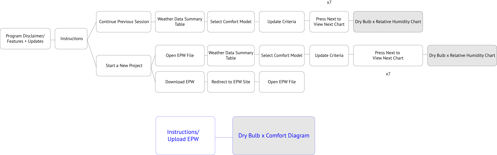

Why do we need new tools and what tools are out there?
Many of the charts used to interpret climate data are very hard to use. Looking at this chart from Climate Consultant (below), we see an overlay of dry bulb temperature, relative humidity, and the comfort standard. While you can see the general trend and compare how each looks different month to month, the problem is that you can't see the exact numbers or pieces of information that are on the page.

Other common methods are using CAD software plugin combinations such as Grasshopper, Ladybug, Honeybee, and DIVA alongside Rhino 3D (which requires taking time to learn). Of course, you could use a spreadsheet or python to do parse the epw information and graph (which I tried), but that requires programming. A common architect student is not likely to have programming knowledge. A building science student may if they came from a technical background like mechanical engineering, but hard-coding a program would away their time to actually analyze the data and make something.
One of the easiest tools is Climate Consultant but it's still a problem.
Let's look below to compare how long it takes to get to the above Dry Bulb x Humidity chart versus our new tool.

In a way, it's not fair to compare the number of steps to view one chart in Climate Consultant versus what we aim to do because Climate Consultant allows for lots of customization (we do not) and they show many charts.
But to really understand a climate (for exploratory matters), do you really need to look at 10 or so charts?
I would argue NO YOU DO NOT. Let me put into context what this tool would be used for. It would be used for an early analysis of the site and to predict something simple such as is it too hot or too cold. Due to constraints, the scope of this projects attempts to create one visualization with the assumption that these principles can be applied to add in more environmental factors and data.
The goal is to create a visualization that shows how many degrees away we're away from the comfort zone given a specific time.
This project is a redesign of the above chart (diurnal temperature chart).
It is simplified for users who might use the chart to find comfortable temperatures based off the California Energy Model, 2013's definition of comfortable Dry Bulb Temperatures. It can take in any epw file and display a chart. EPW files can be found at https://energyplus.net/weather. For my redesign I am focusing on displaying only type of information - dry bulb temperature as a starting point. Of course it must be noted that you can't tell if an environment is comfortable from just dry bulb (you need at least humidity), but for clarity, I wanted to use only one type of information.
Graph Overlays (Design Process)

To get a sense of what the climate graphing programs were already doing and to wee what type of information was essential I went over a couple of exercises of adding overlays over Climate Consultant graphs to gauge what types of information I wanted to extract from the graphs.

When I broke it down, what I really wanted to find out was when was it comfortable (based off of their criteria for comfort)? Since essentially, when it's comfortable you don't need to turn on the ac or heater.
HOWEVER, a big issue of just counting the hours of comfort was that you can't tell when it's too hot or too cold. There's another set of information you're missing and you can't correctly describe the climate just by counting hours. Therefore, I wanted to find a mechanism that would tell us: A. When it's not comfortable and B. When it's too hot or too cold and C. By how much.
We don't really need to know the exact temperature (comfort studies themselves are flawed), but the general idea. It might be nice to know the exact temperature, but the most important thing to know is over a year when do we some help to achieve a comfortable temperature.
HOWEVER, a big issue of just counting the hours of comfort was that you can't tell when it's too hot or too cold. There's another set of information you're missing and you can't correctly describe the climate just by counting hours. Therefore, I wanted to find a mechanism that would tell us: A. When it's not comfortable and B. When it's too hot or too cold and C. By how much.
We don't really need to know the exact temperature (comfort studies themselves are flawed), but the general idea. It might be nice to know the exact temperature, but the most important thing to know is over a year when do we some help to achieve a comfortable temperature.
Early Iteration

The basic concept is that it would be an online tool where an epw file for the user's desired city would be uploaded and a graph would be displayed showing the climate data. The bar graph on the side indicates how many degrees away from the comfort zone. Each bar represents the average temperature for an hour monthly (for example, all of the 8am temperatures of January are sum in the January 8am bar) that is applied to the comfort formula. Light blue indicates it's too cold and red indicates it's too hot. The line graph to the right of the graph is a graph of the original average temperatures. When the user hovers an a bar, a tooltip provides more exact information about how far from comfort, the exact temperature average, and information about what the comfort scale is. When the user clicks on the graph, it reveals the dew point temperature (the green graphs) instead of the dry bulb temperature.
Even if the first iteration was clean and simple, it wasn't clear how it was day to do and comparing across hours was difficult.
So went back to the drawing board to have a more holist view of the dry bulb temperature for the climate.
How to Read Latest Iteration

This one takes the same concept as earlier iterations, but with the added goal of creating a more holistic story about the climate. What is the temperature like everyday versus when you compare it to monthly.
Note: You might notice that the bar graph and the median point in the line graph do not match up though they should be the same value. This is likely due to the different plotting and rounding mechanisms for line graphs vs bar charts.
Example 1
Fullerton, California; January - March
The top is a heat map where you can see the temperature for each day.The more vibrant colors you see the more extreme temperatures. The bottom is a bar graph inverted its side denoting how far away the monthly average is away from comfort. The longer the bar, the more away from comfort. The side line plot indicates the high and lows and the light gray shading indicates the average temperature ranges calculated under the comfort function to see how faraway that temp really is from comfort.
Example 2
Phoenix, Arizona; April - June

Phoenix has some of the hottest temperatures. As you can see there is more red, especially during the day. But during the morning and night in may we can see that its cool and can even be below the comfortable temperature.
Main Takeaways
Through this project, I learned about the importance of storytelling in data. The story of this chart can be read by looking at how every hour of the year is different from the sum.
I'm the type who wants to see important information boiled down to its simplest form. However, in doing that, you lose a lot of the background information and you lose part of the whole picture. Data visualization is similar because you gain and lose different information through different scales. What do you want to show and what is necessary? In a world where we are constantly simplifying things, what are we missing? I think a better way to go about showing information is by using time if your medium permits. A tooltip can give you the little details without obstructing your view of the whole picture. You don't have to show everything at once.
Another important lesson I learned is that software and coding are essentially tools. Knowing how they function and what you can do is important, but without having an idea of what you want to do with them won't get you very far. Because I knew some coding prior to starting this project, I already knew about the power of functions and that applying them to large scale data objects is easy, but just knowing this without a vision of what a plot might look like or without thinking of data visualization techniques from Tufte, I would have had very different and less successful visual.
I'm the type who wants to see important information boiled down to its simplest form. However, in doing that, you lose a lot of the background information and you lose part of the whole picture. Data visualization is similar because you gain and lose different information through different scales. What do you want to show and what is necessary? In a world where we are constantly simplifying things, what are we missing? I think a better way to go about showing information is by using time if your medium permits. A tooltip can give you the little details without obstructing your view of the whole picture. You don't have to show everything at once.
Another important lesson I learned is that software and coding are essentially tools. Knowing how they function and what you can do is important, but without having an idea of what you want to do with them won't get you very far. Because I knew some coding prior to starting this project, I already knew about the power of functions and that applying them to large scale data objects is easy, but just knowing this without a vision of what a plot might look like or without thinking of data visualization techniques from Tufte, I would have had very different and less successful visual.
Sample the Web Tool
NOTE: To be able to use the tool requires the download of an epw file which can be found here and then you must upload the epw file into the tool.
Sorry for the inconvenience. The tool is designed for an audience that would already have epw files at their fingertips.
For your convenience you can find San Francisco here: Right Click and Save